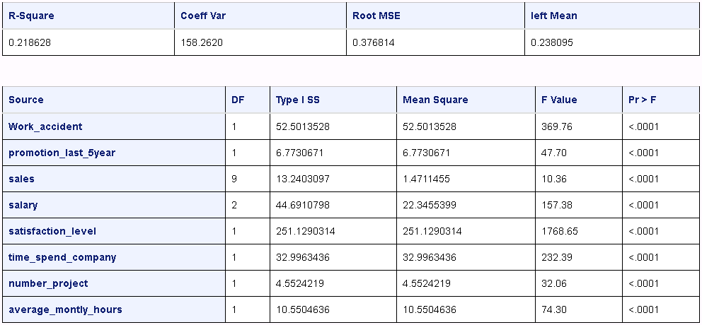
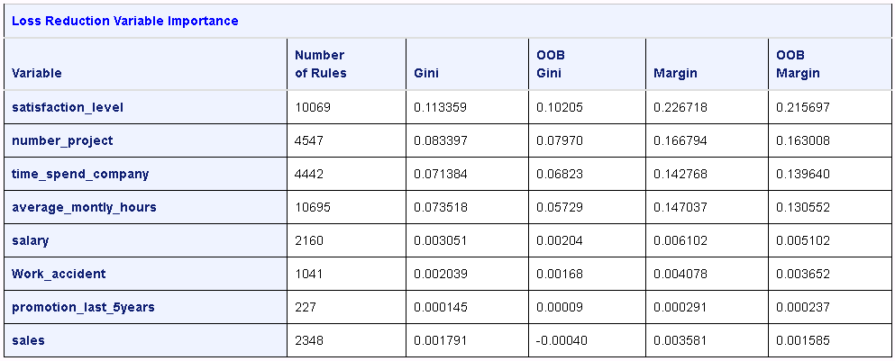

Getting started¶
The SAS kernel for Juypter is designed to enable users to write programs for SAS with Jupyter Notebooks. The kernel makes SAS the analytical engine or “calculator” for data analysis.
The following SAS program is a basic example of programming with SAS and Jupyter Notebook. The HR_comma_sep.csv file that is referenced in the sample code is available from https://www.kaggle.com/ludobenistant/hr-analytics.
Load data into SAS¶
The FILENAME statement is used to specify an external file. The IMPORT procedure can read data from a variety of external file formats.
filename x "./HR_comma_sep.csv";
proc import datafile=x out=_csv dbms=csv replace; run;
Explore the data¶
The CONTENTS procedure can be used to display the column names and data types in a SAS data set. The PRINT procedure can be used to display rows from a data set. In this case, the results are limited to the first five rows.
proc contents data=work._csv;
ods select Variables;
run;
proc print data=work._csv(obs=5);
run;
The MEANS procedure is used to provide descriptive statistics.
proc means data=work._csv n nmiss median mean std min p25 p50 p75 max;
run;
The SGPLOT procedure is used to produce a vertical bar charts of frequencies for salary and sales.
proc sgplot data=work._csv;
vbar salary;
xaxis discreteorder=data;
run;
proc sgplot data=work._csv;
vbar sales;
run;
{kind=link}
The plot of sales across groups, such as IT, RandD, and so on is similar.
Plot histograms with normal distribution curves.
proc sgplot data=work._csv;
histogram satisfaction_level / scale=count;
density satisfaction_level;
run;
proc sgplot data=work._csv;
histogram time_spend_company / scale=count;
density time_spend_company;
run;
proc sgplot data=work._csv;
histogram last_evaluation / scale=count;
density last_evaluation;
run;

The plots for time spent with the company and last evaluation are similar.
Plot a heatmap that shows the relationship between employee satisfaction and the last evaluation.
proc sgplot data=work._csv;
heatmap x=last_evaluation y=satisfaction_level;
run;

There is a small frequency spike in the lower-right corner of the heatmap.
Narrow the heatmap to the employees that have low satisfaction but were evaluated highly.
proc sgplot data=work._csv(where=(satisfaction_level <.2 and last_evaluation >. 7));
heatmap x=last_evaluation y=satisfaction_level;
run;
Finally, split the median satisfaction level for retained employees side-by-side with the median satisfaction for employees who left.
proc sgpanel data=work._csv;
*where satisfaction_level <.2 and last_evaluation > .7;
PANELBY left;
hbar sales / response=last_evaluation stat=median;
hbar sales / response=satisfaction_level stat=median ;
run;
Tip
You can remove the asterisk to plot the employees with low satisfaction and high evaluations.

Split the data into training and test¶
Replace the data set with one that includes a partitioning indicator. The variable is named _PartInd_ and indicates whether the partition is part of the training data (1) or the test data (0). Seventy percent of the data is included in training and the remainder is used for testing.
proc hpsample data=work._csv out=work._csv samppct=70 seed=9878 partition;
class left _character_;
target left;
var work_accident average_montly_hours last_evaluation number_project
promotion_last_5years satisfaction_level time_spend_company;
run;
Train a series of models¶
Decision tree¶
The HPSPLIT procedure can train a decision tree model. For documentation, see http://documentation.sas.com/?docsetId=statug&docsetVersion=14.2&docsetTarget=statug_hpsplit_toc.htm.
proc hpsplit data=work._csv(where=(_partInd_=1)) plot=all;
class work_accident promotion_last_5years sales salary;
model left = work_accident promotion_last_5years sales salary
satisfaction_level time_spend_company number_project
average_montly_hours;
run;
The results include several tables and plots. Only the variable information table is shown below.

Generalized linear model¶
The GLM procedure can train a generalized linear model. For documentation, see http://documentation.sas.com/?docsetId=statug&docsetVersion=14.2&docsetTarget=statug_glm_toc.htm.
proc glm data=work._csv(where=(_partInd_=1)) plot=all;
class work_accident promotion_last_5years sales salary;
model left = work_accident promotion_last_5years sales salary
satisfaction_level time_spend_company number_project
average_montly_hours;
run;
The results include several tables. Only the basic statistics and Type I sum of squares are shown.
{kind=link}
Logistic regression¶
The HPLOGISTIC procedure can create logistic regression models. For documentation, see http://documentation.sas.com/?docsetId=statug&docsetVersion=14.2&docsetTarget=statug_glm_overview.htm.
proc hplogistic data=work._csv(where=(_partInd_=1));
class work_accident promotion_last_5years sales salary;
model left (event='1') = work_accident promotion_last_5years sales salary
satisfaction_level time_spend_company number_project
average_montly_hours;
run;
Neural network¶
The HPNERUAL procedure is available with a SAS Enterprise Miner license.
The procedure trains a multilayer preceptron neural network. For documentation, see http://documentation.sas.com/?docsetId=emhpprcref&docsetVersion=14.2&docsetTarget=emhpprcref_hpneural_toc.htm.
proc hpneural data=work._csv;
hidden 19;
input work_accident promotion_last_5years sales salary
/ level=nominal;
input satisfaction_level time_spend_company number_project average_montly_hours
/ level=interval;
target left / level=nominal;
train numtries=15 maxiter=300;
run;
The results include several tables. The fit statistics and misclassification tables are shown below.

Decision forest¶
The HPFOREST procedure is available with a SAS Enterprise Miner license.
The HPFOREST procedure creates a forest of many decision trees and creates a predictive model. For documentation, see http://documentation.sas.com/?docsetId=emhpprcref&docsetVersion=14.2&docsetTarget=emhpprcref_hpforest_toc.htm.
proc hpforest data=work._csv;
input work_accident promotion_last_5years sales salary
/ level=nominal;
input satisfaction_level time_spend_company number_project average_montly_hours
/ level=interval;
target left / level=nominal;
run;
The results include several tables of information. The loss reduction and variable importance table is shown below.
{kind=link}